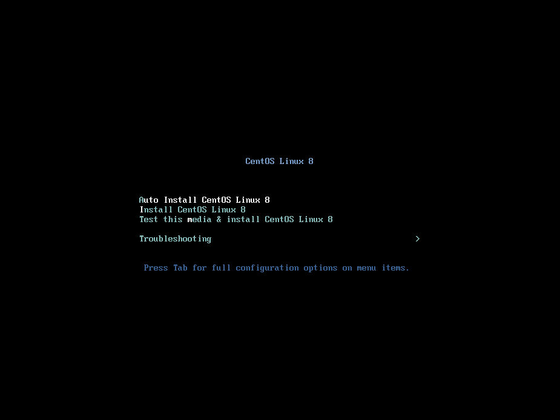
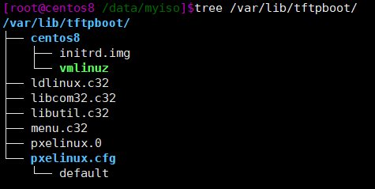
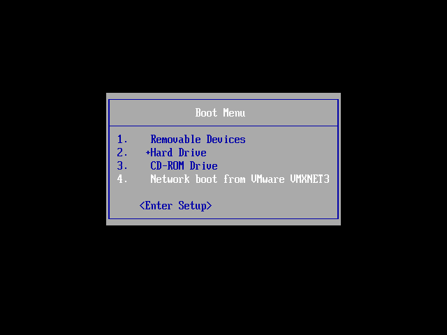
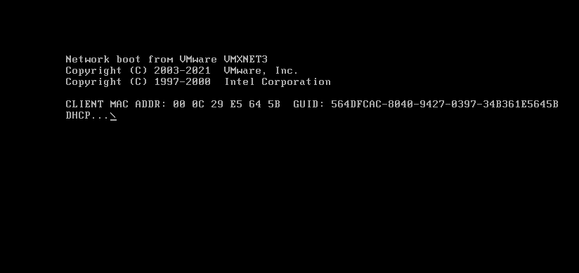
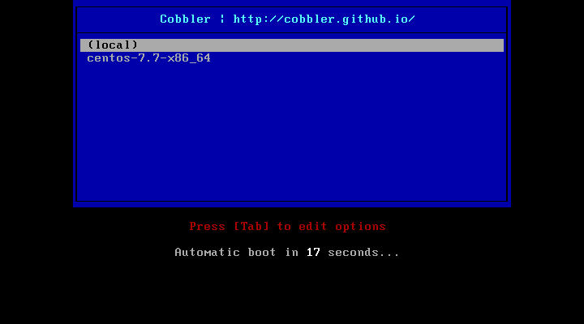
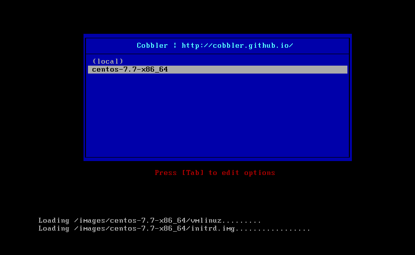

分别使用自制光盘引导，PXE, Cobbler完成自动安装系统。
光盘引导 使用自制光盘安装，其中的ks应答文件会自动选择安装选项。
/mnt/i solinux/ / data/myiso/ /data/myi so]$vim myks.cfg/data/myi so/isolinux/i solinux.cfg8 4 --boot-info-table -V "CentOS 8.3 x86_64 boot" -b isolinux/isolinux.bin -c isolinux/ boot.cat -o /root/myi so.iso /data/myi so/1 root root 81 M Jul 9 03 :51 myiso.iso
1 2 3 4 5 6 7 8 9 10 11 12 13 14 15 16 17 18 19 20 21 22 23 24 25 26 27 28 29 30 31 32 33 34 35 36 37 38 39 40 41 42 43 44 45 # 应答文件myks.cfg $ 6$j9YhzDUnQVnxaAk8$qv7rkMcPAEbV5yvwsP666DXWYadd3jYjkA9fpxAo9qYotjGGBUclCGoP1TRv # autopart --type =lvm # part / --fstype xfs --size 1 --grow --ondisk sda 可以实现根自动使用所有剩余空间 % packages % end % addon com_redhat_kdump --enable --reserve-mb='auto' % end % anaconda % end % post % end
在新建虚拟时选择自制光盘，启动后效果如图

PXE 需要的软件包有：dhcp-server tftp-server httpd syslinux-nonlinux
配置DHCP 使安装新主机获得ip地址和pxe文件位置
1 2 3 4 5 6 7 8 9 10 11 12 13 14 # 配置文件可在复制示例/usr/share/doc/dhcp-4.1.1/dhcpd.conf.sample 并修改 # 添加 # next-server：提供引导文件的服务器IP地址 filename: 指明引导文件名称
准备yum源和应答文件 可使用一台主机安装httpd服务，挂载光盘到网页目录下。
使用yum源同光盘引导部分。将上文光盘引导所用引导文件放到网页目录下。
准备PXE相关文件 将相关启动文件存放到tftp服务文件夹（/var/lib/tftpboot/）下。
需要的文件有：系统光盘下/isolinux/下的vmlinuz和initrd.img
（centos8还需要ldlinux.c32,libcom32.c32,libutil.c32）
/usr/share/syslinux/下的 pxelinux.0和menu.c32文件

准备启动菜单文件 1 2 3 4 5 6 7 8 9 10 11 12 13 14 15 16 17 18 19 20 21 22 23 24 25 26 27 28 cp /var/www/html/centos/8/os/x86_64/isolinux/isolinux.cfg /var/lib/tftpboot/pxelinux.cfg/default
新建虚拟机，在加载完成前按esc打开boot menu 选择网卡引导

等待自动安装

Cobbler Cobbler实质是PXE的二次封装，将多种安装参数封装到一起，并提供统一的管理方法。
CentOS8没有提供cobbler包，使用CentOS7进行。
1 2 3 4 5 6 7 8 9 10 11 12 13 14 15 16 17 18 19 20 21 22 23 24 25 26 27 28 29 30 31 32 33 34 yum -y install cobbler systemctl enable --now cobblerd httpd tftp dhcpd vim /etc /cobbler /settings default_password_crypted : "$1$1spuisnh$j34LNmyTQWs3l6xKxCZY60" next_server ：< tftp 服务器的 IP 地址>server ：<cobbler 服务器的 IP 地址>manage_dhcp ：1 pxe_just_once : 1 systemctl restart cobblerd vim /etc /cobbler /dhcp .template subnet 10 .0 .0 .0 netmask 255 .255 .255 .0 {option routers 10 .0 .0 .2 ;option domain-name-servers 223 .5 .5 .5 ;option subnet-mask 255 .255 .255 .0 ;range dynamic-bootp 10 .0 .0 .200 10 .0 .0 .250 ;default-lease-time 21600 ;max-lease-time 43200 ;next-server $next_server ;cobbler sync cobbler get-loaders mount /dev /sr0 /mnt cobbler import --name=centos-7.7-x86_64 --path=/mnt --arch=x86_64
最终效果如图

